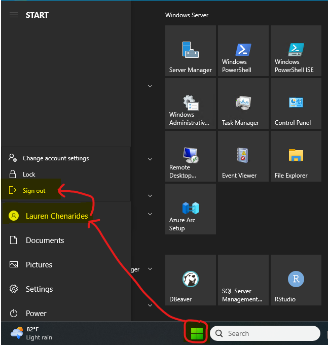

Connecting to the Orchard Server
These instructions explain how to connect to the Orchard server from a Windows PC or Mac.
Before you begin
You will need:
- A CSU NetID and password
- Access to Duo two-factor authentication
- Permission to access the Orchard server
- An internet connection
If you are off campus, connect to CSU’s GlobalProtect VPN before opening the remote desktop application. Instructions for installing and using GlobalProtect are available on the CSU GlobalProtect VPN website.
- Server:
Orchard.cas.colostate.edu - Username:
COLOSTATE\YourNetID - Password: Your CSU NetID password
Replace YourNetID with your own NetID. Do not share or email your password.
Orchard currently supports only two active Remote Desktop connections at a time. If you cannot log in, both connections may be in use.
Wait 15 minutes and try again. If you are still unable to connect, post a message in the General | CAS DARE Chenarides Lab Teams channel.
Windows PC
Windows computers include the Remote Desktop Connection application.
Set up the connection
Open the Windows Start menu.
Search for Remote Desktop Connection and open it.
Select Show Options.
In the Computer field, enter:
Orchard.cas.colostate.eduIn the User name field, enter
COLOSTATE\YourNetID.
Make your local drives available on Orchard
This setting allows you to open files from or save files to your own computer while working on Orchard. You will only need to set this up once.
- In Remote Desktop Connection, select Show Options to expand window.
- Navigate to the Local Resources tab.
- Under Local devices and resources, select More….
- Mark the checkbox next to Drives.
- Select OK.
- Return to the General tab.
After you log in, your local drives should appear in File Explorer under This PC. They may be labeled with names such as C on YourComputerName.
Files opened from Orchard may be saved to the redirected drive on your local computer.
Connect
- Select Connect.
- When prompted for your password, enter your CSU NetID password.
You should now see the Windows desktop for Orchard.
Mac
Mac users will connect through Microsoft’s Windows App, which replaced the former Microsoft Remote Desktop app.
Install Windows App
- Open the App Store on your Mac.
- Search for Windows App by Microsoft Corporation.
- Install and open the app.
You can also access the official download through Microsoft’s Windows App instructions.
Add Orchard
Open Windows App and select the Devices tab.
Select the + icon, then choose Add PC.
In PC Name, enter:
Orchard.cas.colostate.eduIf you want to save your username, add a user account using
COLOSTATE\YourNetID. You may also leave the account setting as Ask when required.Optional: enter Orchard as the friendly name.
Select Add.
Make a folder on your Mac available on Orchard
Folder redirection allows you to open files from or save files to a selected folder on your Mac while working on Orchard. You will only need to set this up once.
- In the Devices tab, find the Orchard connection.
- Select the … menu on the Orchard card, then select Edit.
- Open the Folders tab.
- Mark Redirect folders, then select the + icon.
- Choose the folder you want to make available on Orchard.
- Select Save.
The redirected folder should appear as a network drive in File Explorer during your Orchard session. If macOS asks whether Windows App may access files or folders, select Allow for the folder you chose.
Files opened from Orchard may be saved to the redirected drive on your local computer.
Connect
- Double-click the Orchard connection in the Devices tab.
- When prompted, enter
COLOSTATE\YourNetIDand your CSU NetID password. - Complete Duo authentication if prompted.
- If a certificate or identity message appears, confirm that the computer name is
Orchard.cas.colostate.edu. If a different computer is listed, cancel the connection and ask for help.
You should now see the Windows desktop for Orchard.
After your first successful login
Once you have successfully connected to Orchard, notify Dr. Chenarides. We will schedule a time to meet with CSU IT to activate and connect your Microsoft 365 account on the server.
Please confirm that you can reach the Orchard desktop before the meeting with CSU IT. Do not try to configure Microsoft 365 on the server on your own.
Ending your session
There is an important difference between disconnecting and signing out:
- Disconnecting leaves your session active. When you reconnect, your applications and work should still be open, although you may need to enter your password again. The session continues to occupy one of Orchard’s available remote desktop connections.
- Signing out closes your applications, ends your session, and frees the connection for another user.
Until further notice, sign out of Orchard when you finish working so that one of the server’s two remote desktop connections remains available to others.
If you need to leave code running overnight, post a message in the General | CAS DARE Chenarides Lab Teams channel before disconnecting.
To sign out
- Save your work and close any applications.
- Open the Windows Start menu on Orchard.
- Select your user icon.
- Select Sign out.

To disconnect
Close the Remote Desktop window by selecting the X at the top of the window. This leaves your Orchard session and any open applications running.
Do not select Restart or Shut down from the Windows Power menu. These options affect the entire server and could interrupt other users’ work. Only authorized IT personnel should restart or shut down Orchard.